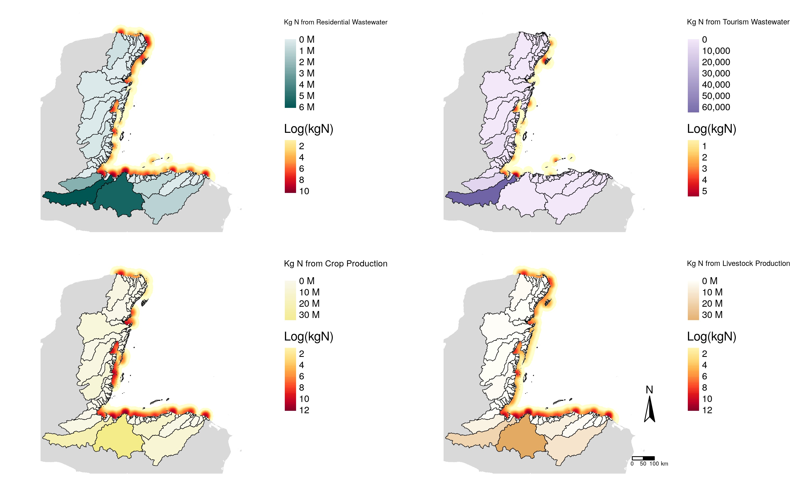

Quantifying nitrogen pollution to the worlds 2nd largest barrier reef
Project Overview
This project was assigned to me while working as a Data Analyst at the National Center for Ecological Analysis and Synthesis (NCEAS), the first job I held after finishing my master’s degree at the University of California, Santa Barbara. I worked on the analysis from 2020 - 2021, and the paper was published in Ocean and Coastal Management in 2022.
Land-based nitrogen pollution is a major threat to coastal ecosystems, especially in tropical regions home to high biodiversity habitats such as coral reefs and seagrass beds. The sustained addition of excess nutrients (in the form of nitrates) to these ecosystems, which are adapted to low-nutrient environments, disrupts ecosystem function and the ability to provide services that support livelihoods and benefit human well-being. Nitrogen (N) primarily originates from agricultural crop production, livestock waste, and human sewage, as well as excretion from seabird and feral ungulates for some small atolls and cayes.
Determining the most effective mitigation strategies to reduce N pollution in a given location begins with identifying and quantifying input from the source. For this project, we modeled four major sources of N pollution – crop production, livestock production, wastewater generated from permanent residents and wastewater generated from seasonal populations, ie tourists – at the regional scale, measuring inputs and impacts from 430 watersheds that drain into the Mesoamerican Reef (MAR) region
Tools and Libraries
All analysis was done in
Rusingtidyverse,sf,raster(this was pre-terradays),purr,foreachGraphs were created using
ggplot2and maps were created usingtmapMajor shout out to Coolors for helping me pick the perfect color palette
Methodology
- Estimating N from Wastewater: Sourced publicly available data, as well as data from partner organizations in the Mesoamerican reef region, on hotel and other tourist accommodation locations, watershed boundaries, pourpoints, population densities, and access to wastewater treatment types (UNICEF) for an area spanning from Mexico to Honduras. (Fig 1)
- Estimating N from Agriculture and Livestock: I collaborated with the team behind the fantastic paper paper to acquire spatial crop and livestock production data. I replicated their methods for estimating N generated from each unit area of production, which was based on Fertilizer input and type of production. See Halpern et al (2021) for more details.
- Estimating N from Cruise ships: Used AIS ship tracking data shared by Global Fishing Watch to identify location of cruise ships present in the region in a 1 year time span. This data also allowed me to estimate how many days cruiseships spent in the MAR. I used web scraping (via Wikipedia) to generate a dataset listing active cruiseships and their human capacity, and matched ship vessel numbers to the spatial data to ID each ship in space and time. I used the capacity of the ship to estimate how much wastewater effluent each might be producing, and therefore how much Nitrogen each ship might add to the wastwater system in the watershed where it was docked, by offloading its waste*
- Estimating pollution impact area in the nearshore marine environment:
- I quantified the amount of N from the above three sources in spatially explicit, and then used a raster depicting location of surface waters (including rivers, streams, wetlands) to filter out any N that was further than 1 km from a water source. This is a very “rough” way of estimating watershed transport dynamics, but I consulted a few experts that felt it was satisfactory for our purposes.
- I summarized N pollution within 1 km of surface waters by watershed, then assigned that amount to the corresponding pour point. I used a diffusion equation developed by Tuhloske et al in to then estimate the extent of the spatial “plume” that would result from that magnitude of pollution. Note: this script was shared with me and was written using GRASS cli. I amended and customized the script to support iterative analyses, building a loop around it. This was a major learning experience.
- Assessing habitat impact: I used publicly available spatial data on the spatial extent of three key marine habitats in the region: coral reefs, sea grasses, and mangroves. I intersected these with my N “plume” maps to estimate what area percentage of each habitat might be impacted by N pollution (ie Nitrogen enrichment)
Key Findings
- At the watershed level, watersheds from the Southern portion of the MAR seem to be contributing the most N pollution, across all sources analysed

tmapSkills I learned & honed
This project challenged me immensely, and I credit it with pushing me from a freshly-minted master’s student in spatial planning to seasoned data wrangler and analyst within the 1.5 years I worked on it. I performed many of these analyses on my own, sometimes with help from other project teams at NCEAS and from prior publications, but in general was working through this solo. And note this was pre-AI, so I spent A LOT of time troubleshooting and Googling, but it helped me learn so much in process.
The most useful skills I built from this project were:
web scraping
writing iterative scripts for automated workflows
command line interface programming
cross-cultural collaboration & scientific publishing
Acknowledgements
I had the most fantastic co-authors on this project: Steve Canty from the Smithsonian, Cascade Tuhloske ( now a professor at University of Montana) and NCEAS Director Ben Halpern. I also just want to shout out the many individuals who helped with data collection, feedback, or just general moral support along the way. Thank you to Antonella Rivera, Jenny Myton, Javier Pizaña and others from Coral Reef Alliance, Melanie McField and Ana Giro at Healthy Reefs Initiative, Alejandro Lopez and others at Centinelas de Agua, Mauricio Mejia at WWF Mesoamerica and Lauretta Burke at WRI for sharing data and their knowledge.
This work was funded by the Summit Foundation and the National Philanthropic Fund.